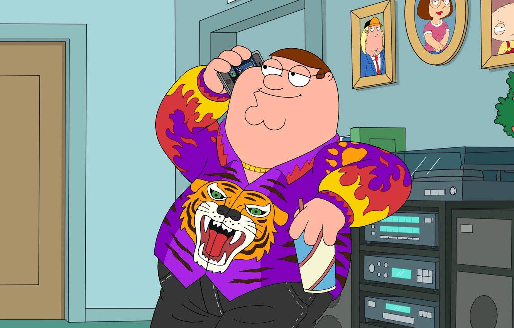

Peter Griffin

Soy yo, Peter Griffin, el tipo más carismático, apuesto y (según Lois) más insoportable de Quahog. Bienvenidos a mi humilde página web, donde podrán aprender sobre mi asombrosa vida, mis hazañas legendarias y, por supuesto, por qué debería ser declarado Tesoro Nacional.
¿Quién es Peter Griffin?
Bueno, aparte de ser un icono de la moda (gracias a mi camiseta blanca y mis pantalones verdes), soy un orgulloso ciudadano de Quahog, Rhode Island. Trabajo en la cervecería Pawtucket (cuando no estoy despedido), pero mi verdadera pasión es… ¡HACER LO QUE ME DA LA GANA!